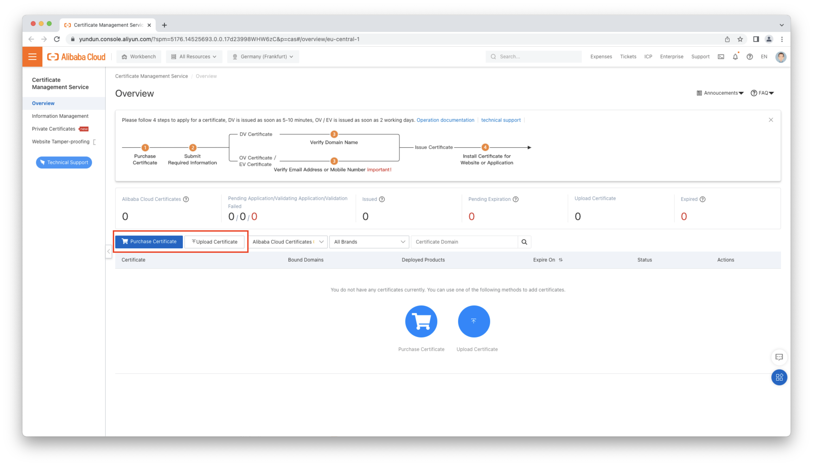

Global Accelerator Solution
Using Global Accelerator to speed up internet services worldwide
Why Global Accelerator
International network connections usually have to cross lots of different Internet Service Providers(ISP). More network vendors in between often lead to a decreased quality of service in terms of latency and packet loss. Cross-border bandwidth demand between different geographic regions is steadily growing due to an ever increasing need of global system and application integration projects. Often, however, the public internet bandwidth is limited and not reliable without any quality of service guarantees. In such scenarios, Global Accelerator(GA) is a good choice to optimize the quality of service and latency. Based on the backbone network of Alibaba Cloud, a stable and low latency cross-region network can be created in just a few steps.
Cross-border connectivity to Mainland China
Network latency between Mainland China and the rest of the world is inevitable, because of the unpredictable network connection. Therefore, latency of cross-region (including cross-border) data transfer is about at a factor three times bigger than usual.
For enterprise services or cross-region services, cross-border connectivity will be the worst bottleneck. Main public cloud providers such as Azure and AWS can not provide a satisfying solution for this problem: using a Content Delivery Network(CDN) still results in content being transferred over public internet and also does not give any bandwidth guarantees.
What is Global Accelerator (GA)
Global Accelerator is a network acceleration service, benefiting from the high-quality bandwidth and global transmission networks that are provided by Alibaba Cloud. Global Accelerator enables nearby access to the Internet and cross-region deployment of applications, improving the user experience of internet services. Global Accelerator features high network quality, high security, high availability, and low latency. In addition, Global Accelerator can be deployed and configured within several minutes, making service deployments faster and more agile.
You will find the technical documentation of GA here https://www.alibabacloud.com/help/en/doc-detail/153189.html.
Terms of GA:
Accelerated IPAfter you add a region to an acceleration area, GA assigns an accelerated IP address to the region. Clients can connect to the access point that is closest to the clients through the accelerated IP address. The access point receives client requests and forwards the requests to the Alibaba Cloud global network.ListenerA listener listens for connection requests and distributes the requests to endpoints based on the port and protocol that you specify. Each listener is associated with an endpoint group. You can associate an endpoint group with a listener by specifying the region to which you want to distribute network traffic. After you associate an endpoint group with a listener, network traffic is distributed to optimal endpoints in the endpoint group.EndpointEndpoints are destinations of client requests. Endpoints can be SLB instances, ECS instances, Alibaba Cloud public IP addresses, or IP addresses and domain names of origin servers outside of Alibaba Cloud.Basic bandwidth planA basic bandwidth plan provides bandwidth for data transfer over the Internet and within internal networks of Alibaba Cloud. However, the basic bandwidth plan is not applicable to data transfer between Mainland China and areas outside of Mainland China.Cross-border bandwidth planIf you require data transfer acceleration between mainland China and areas outside mainland China, you must purchase a cross-border acceleration bandwidth plan.
Compared to Alibaba Cloud’s Cloud Enterprise Network CEN service,
GA strictly focuses on accelerating public endpoints through Alibaba Cloud’s private backbone network whereas CEN focuses on peering virtual private cloud VPC networks both inner- and intra-region wise.
Typical Scenarios
Cross-border Acceleration
In this scenario, we will accelerate the access to a web-based endpoint (e.g. website or REST-API) that is hosted in Germany off of Alibaba Cloud from Mainland China.
The last-mile in Germany and Mainland China will both be served by the public internet. One the request hits the public endpoint of GA it is then transmitted through GA which is using Alibaba Cloud’s private backbone network which gives you a dedicated bandwidth you can set yourself and very low latency. For example, between Shanghai and Frankfurt we usually see latency of around 130ms. Generally, the end-to-end latency can be reduced by more than 40% based on our experience. You can do a performance test yourself as described in this example.
GA will bring the following benefits:
- Decreased latency of end-to-end connections.
- Network-security is improved since traffic is routed over Alibaba Cloud’s private backbone network.
- Bandwidth can be guaranteed which is critical to enterprise-grade network environments.
- Simple setup: one GA instance can support multiple accelerated IPs worldwide in different regions.
Cross-border Acceleration with CDN
In this scenario, a DCDN(Dynamic Route of CDN) is deployed in front of the GA instance to improve the loading speed of static content even further. Static content such as images, videos, and scripts such as HTML, CSS, and Javascript, will be cached by CDN on nodes near clients. As of this writing Alibaba Cloud provides mpre than 2800 CDN nodes world-wide. Dynamic content will be routed through the GA connection.
If your static assets are already hosted on our object storage (OSS) you can also have your data automatically sync with any of our 23 OSS locations world-wide and direct your CDN to a localized origin.
For a deeper discussion on this topic please refer to Alibaba Cloud GA.
How to set up a GA instance for a Proof of Concept (PoC)
For a PoC, an additional reverse proxy is added that is hosted on an ECS instance in the service area on Alibaba Cloud. The reverse proxy is used as router to origin sites which takes care of filtering traffic and restricting domains that can be possibly reached from the accelerated IP. It also helps in defining more complex routing rules and HTTP modifications.
We recommend this architecture for any kind of production scenarios, or whenever you are in need for more complex routing rules for your backend endpoints. In particular, it enables you to:
- share a GA with multiple origin sites. Because GA currently does not support the routing of multiple domains or virtual hosts with the same port.
- support high-availability (HA). We recommend to add a Service Load Balancer before two instances deployed on two different availability zones which both run an instance of the reverse proxy.
The entire setup as described above can be deployed and configured in two ways:
- Option A: Fully automated through provisioning with Terraform scripts. Please see for https://github.com/zchome/alicloud-ga-reverse-proxy for instructions and code.
- Option B: Manually, by using the Alibaba Cloud web console.
The following resources will be created.
Designed by Alibaba Cloud CADT. For a beginner of Terraform or simple architecture, we recommend the Tool CADT. You can design your cloud environment and directly deploy all resources on Alibaba Cloud.
Components
GAGlobal Accelerator with an accelerated IP in HongKong and back endpoints in Germany.VPCone Virtual Private Cloud VPC network for all resources.vSwitchtwo vSwitch in two different Availability Zones for high availability HA.SLBone Server Load Balancer SLB instance for HA.ECStwo Elastic Compute Service ECS instances for HA. ECS instance is used for deployingNGINXserver as reverse proxy.EIPthree Elastic IP EIP for public network access. EIPs will be associated to ECS instance and SLB.
Terraform scripts
Download and checkout https://github.com/zchome/alicloud-ga-reverse-proxy from Github and follow the instructions of the project page.
- Install required tools locally, e.g.
Terraform,Terragrunt. - Update the configuration file
common_vars.yamlthat lets you specify the accelerated and service region and bandwidth specification. - Export
ALICLOUD_ACCESS_KEYALICLOUD_SECRET_KEYALICLOUD_REGIONvariables to your environment. - Execute
terragrunt run-all init&terraform run-all applyin the project’s root directory.NginxReverse Proxy config is not include in the project, you can follow the guidance ofNginxconfig inREADME.md.
Web console
We will go through the following configuration flow as depicted in below picture.
Step 1: Create a GA instance

You can visit instances specification for more information.
In Bandwidth Manage tab, you can manage a bandwidth package and assign it to a specific GA instance.
If you want to accelerate traffic from Hong Kong region, you have to choose Premium.
You can visit bandwidth types for more information.
If you want to accelerate traffic from mainland China, you have to buy both Cross-Border Bandwidth Plan and Basic Bandwidth Plan.
You can visit cross-border bandwidth for more information.
Step 2: Add Acceleration Areas
Step 3: Add listener
Endpoint Group of listener is very important. It is the output endpoint of GA.
Please choose the same region of your backend services.
Note: For different listeners, you can define different ports and protocols.
Monitor Traffic Over GA
FAQ
Performance Comparison
For performance comparison, especially speed comparison, you can use the following command to measure the connection time and content loading.
1 | curl -w "@curl-format.txt" -H "Cache-Control: no-cache" -o /dev/null https://www.accelerated.domain |
The following table shows an example comparison. You can use above command to test by yourself every several minutes. Then you can get an average value.
| Time Measurement | Internet | GA + Self-Build Proxy |
|---|---|---|
| Connect Time | 1.607 | 0.064 |
| Total Time | 2.266 | 0.768 |
HTTP/HTTPS or TCP/UDP
- GA supports layer 7 (Application Layer) protocols HTTP/HTTPS. For HTTPS you need to upload an SSL certificate. As a proxy, source IP can be added to http header if you enable
Client Affinityfeature. - GA supports layer 4 (Transport Layer) protocols TCP/UDP as well. Therefore almost all kinds of higher layer protocols or other application layer protocols can be supported. e.g. MQTT or Kafka protocols.
If HTTPS protocol is chosen please use a valid SSL certificate in the Listener config.
Before you choose an SSL certificate, you need to upload an existing SSL certificate or purchase an SSL certificate from Alibaba Cloud’s Certificate Management Service.

On the Endpoints config of HTTPS Listener, you can choose HTTP or HTTPS as backend service. Additionally, you can map a requested port to other ports.
By using HTTPS protocol on GA, for different security requirement, you can choose one of following solutions.
- Option 1: HTTPS for public connection to GA where the SSL connection is terminated. Unencrypted HTTP connection to the backend services. If all servers are located on Alibaba Cloud, this option is usually sufficient for most scenarios.
- Option 2: HTTPS in all phases meaning the SSL connection is only terminated at your origin servers which provides strict security protection. This is especially recommended if your origin servers are hosted off of Alibaba Cloud.
Endpoint Group
For example, when you add a HTTP listener with HongKong Endpoint,
following IPs will allocated to the endpoints.
1 | Endpoint Group IPs (80) |
Log format
1 | log_format main '$remote_addr - $remote_user [$time_local] $host$request_uri "$request" ' |
On the backend server, you will get the access log as following text. As an example, the following logs are retrieved from the reverse proxy server.
1 | 47.57.188.173 - - [30/Nov/2021:23:38:15 +0800] ###########/login?next_url=/ "GET /login?next_url=/ HTTP/1.1" 200 59350 "-" "Mozilla/5.0 (Macintosh; Intel Mac OS X 10_15_7) AppleWebKit/605.1.15 (KHTML, like Gecko) Version/15.0 Safari/605.1.15" "188.174.62.87" |
The IP 47.57.188.173 is one of listener endpoint group IPs. Due to Client Affinity feature is enabled, source IP is added in HTTP header and forward to backend servers.
The IP 188.174.62.87 is the source IP of end users who try to access accelerated domains.
If the reverse proxy server is located on Alibaba Cloud, you can use Log Service (SLS) to collect, store, analyze and visualize the log files.
With SLS, you can analyze requests and create dashboard to monitor high risk requests. Please visit Log Service for more information.
DNS config
sub.domain.com —(1)—> GA CNAME or Accelerated IP —(2)—> Origin Site
Set up customize domain on SaaS vendor portal.
If required, please upload ssl certificate to the SaaS vendor.
Update DNS record with GA CNAME or Accelerated IP.
Config traffic to origin site.
Conclusion
Global Accelerator is the most simple and cost efficient solution to accelerate public network access and increasing the network reliability at the same time, including any connections to and from Mainland China.
Additionally, GA is easy to deploy and to configure and is usually setup in short time. We also provide Terraform scripts that will automate the entire provisioning as described in this blog post earlier.
 Wechat Pay
Wechat Pay Alipay
Alipay